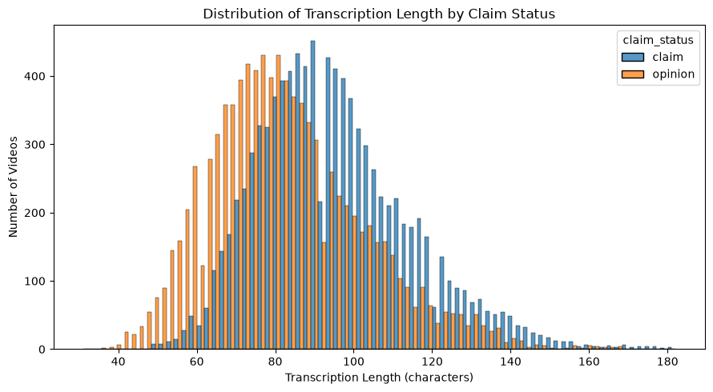
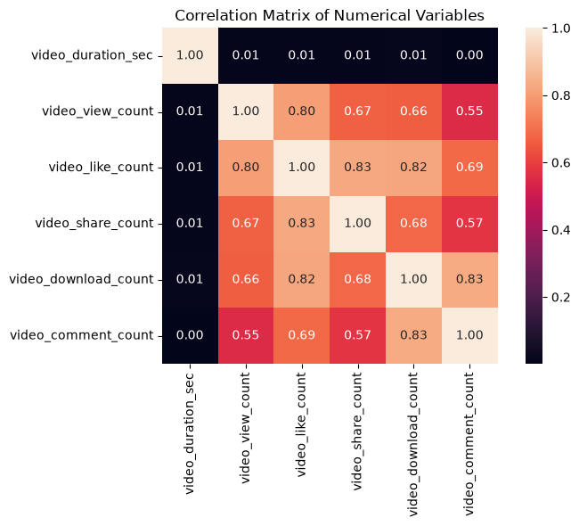
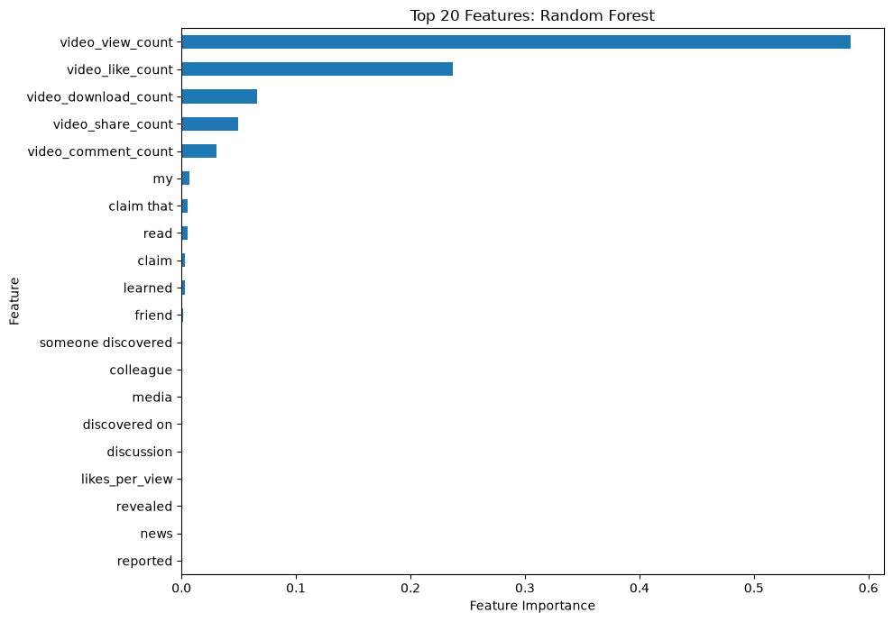
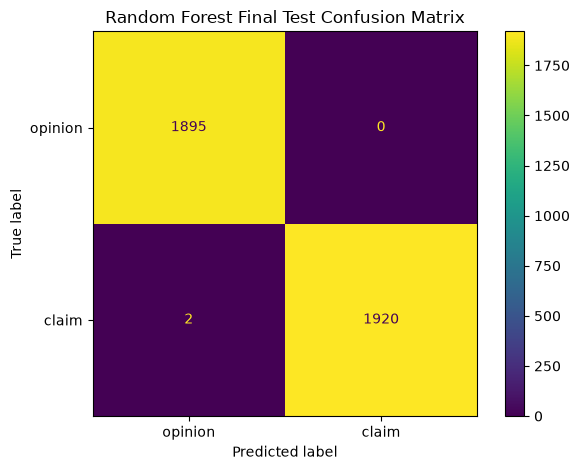
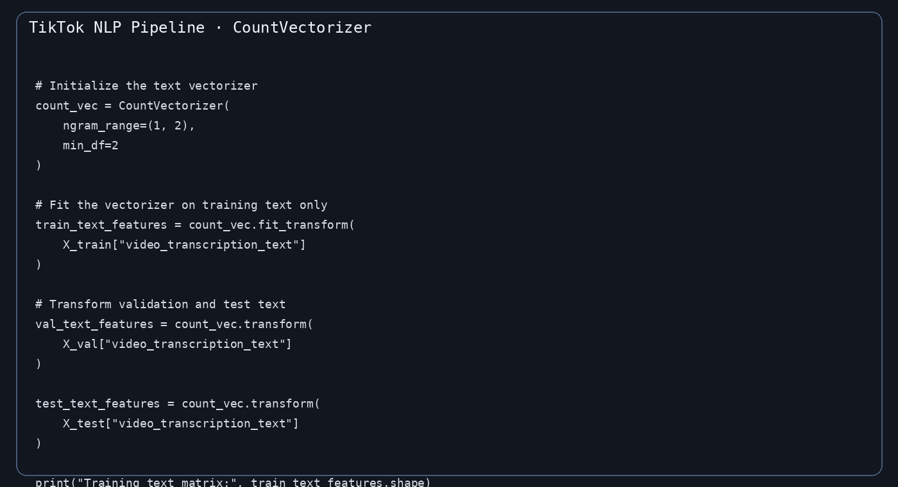

Business Problem
Large volumes of reported content can make manual review difficult to prioritize. The analytical objective is to determine whether available video, engagement, author, and transcription features contain enough information to distinguish claims from opinions.
Objective
Build and evaluate a model that classifies videos as claims or opinions and could support review prioritization.
Data Science Focus
EDA, statistical analysis, feature engineering, text vectorization, supervised classification, model interpretation.
Approach
The workflow separates model development from final evaluation so the final test set remains unseen until model selection is complete.
Inspected missing values, duplicates, variable types, and skewed engagement features. 298 incomplete records were removed because missingness affected the target and important predictors.
Examined claim status, engagement behavior, author status, and transcription characteristics to identify useful predictive signals.
Welch's two-sample t-test was used to examine the difference in mean video views between verified and unverified accounts.
Transcription text was converted into numerical features with CountVectorizer and combined with structured variables.
Random Forest and XGBoost were optimized and compared using validation data, with recall emphasized for identifying claims.
The selected Random Forest was evaluated once on the held-out test set.
Tools
Python Pandas NumPy Scikit-learn XGBoost Matplotlib NLP CountVectorizerFinal Model Results
The selected Random Forest was evaluated on an untouched test set of 3,817 observations.
Confusion Matrix
1,895 opinion videos were correctly classified as opinions. 1,920 claim videos were correctly classified as claims. Only 2 claim videos were misclassified as opinions, with no opinion videos incorrectly classified as claims.
Model Selection
Random Forest was selected using validation recall. XGBoost also achieved very strong validation performance, but Random Forest made fewer errors on the validation set.
Statistical Finding
The analysis also examined whether verification status was associated with video view counts.
Interpretation
The test provides strong statistical evidence of a difference in mean video views between verified and unverified accounts in this dataset. The result is an association, not evidence of causation.
Limitations & Next Steps
Dataset limitation
The dataset is simulated and created for educational purposes, so the reported performance should not be treated as evidence about real TikTok moderation systems.
Feature availability
Engagement variables may become available only after a video has accumulated interactions. Their availability at the actual prediction time should be verified to avoid temporal leakage.
Validation before deployment
Additional real-world data and independent evaluation would be required before considering production use.
Future analysis
Additional signals such as user report history and author-level reporting patterns could be investigated to improve the modeling context.
Project Takeaway
The available dataset contains a very strong predictive signal for distinguishing claims from opinions. The main signal comes from engagement-related variables, while the text features provide additional information within the modeling pipeline.
Project Files
Explore the technical notebook, executive summary, and project proposal for a deeper look at the analysis and modeling workflow.
Technical Notebook
Full Jupyter Notebook containing the data preparation, analysis, statistical testing, NLP pipeline, model development, and evaluation.
View NotebookExecutive Summary
A concise summary of the business problem, methodology, key results, limitations, and practical interpretation.
Open SummaryJob Proposal
A freelancing-focused proposal showing how the project demonstrates an end-to-end data science and machine learning workflow.
Open ProposalSelected Analysis
A selection of visual outputs from the project, highlighting the analytical workflow and final model interpretation.

Transcription Length Distribution
Distribution of transcription length across claim and opinion videos.

Correlation Analysis
Correlation structure among selected numerical variables used to understand relationships and potential redundancy.

Feature Importance
Model-based feature importance showing which available signals contributed most to the Random Forest predictions.

Final Confusion Matrix
Final test-set classification results for the selected Random Forest model.

Text Vectorization Pipeline
Code showing the text vectorization workflow, with the vectorizer fitted on training text before transforming validation and test data.